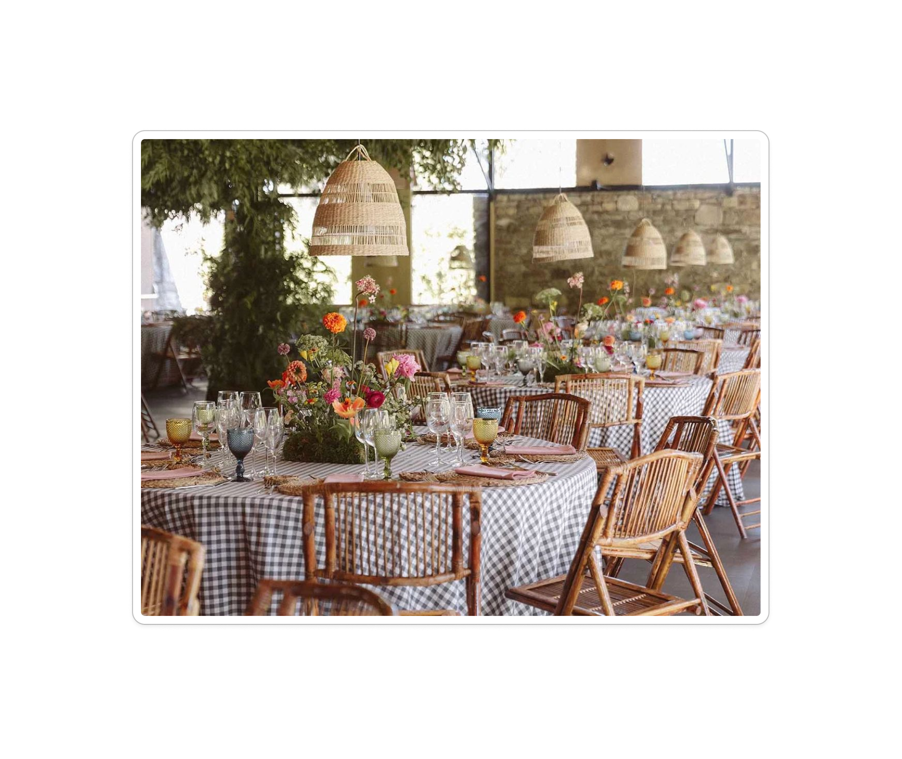
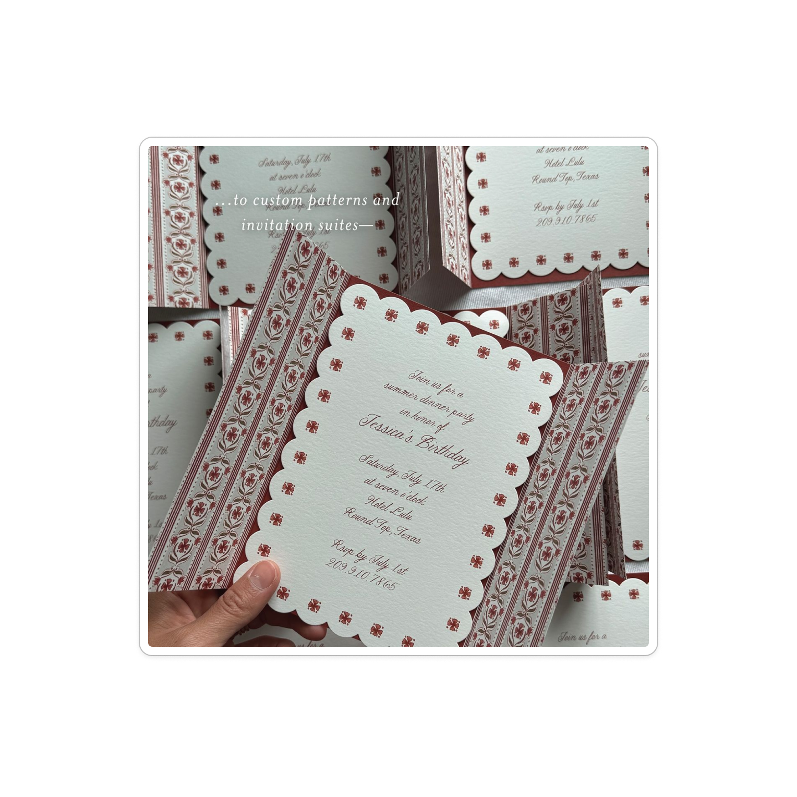
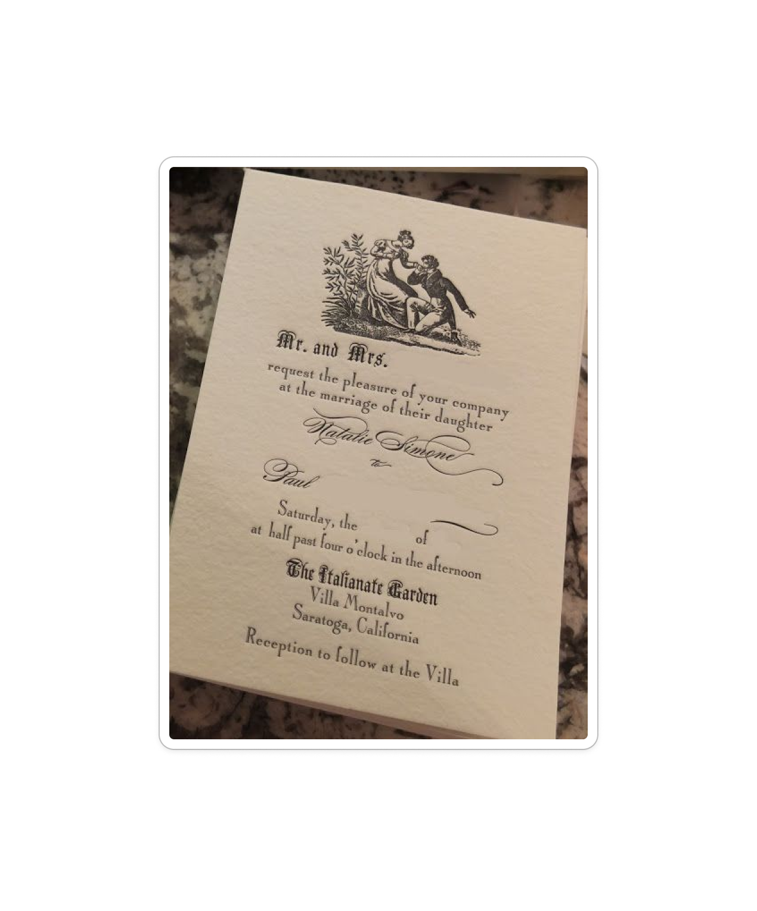
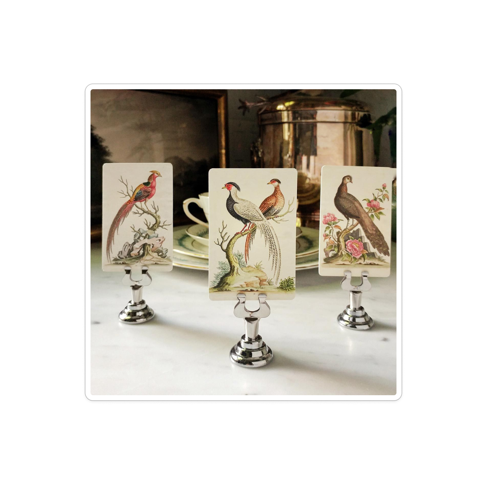

Brooks
&Allison
Santa Fe meets Tuscany meets a New England sporting club.
A long oak table laid with linen and gingham, candles burning down to the holders, a censer-warm light catching on a gilded icon in the corner of the room. Editorial but familial. Sacramental but unfussy. Old-world hospitality, set in the high desert in autumn.





The Triangulation
- Adobe, viga ceilings, deep-set windows
- Saffron, terracotta, sky at dusk
- Silver, turquoise (sparingly)
- Worn leather, hand-loomed wool
- Ochre plaster, cypress, olive
- Long lunches, sun-warmed stone
- Bordeaux, cured meats, fig
- Gilt frames, frescoed saints
- Hunter green, brass, mahogany
- Gingham, tartan, monogrammed napkins
- Audubon prints, taxidermy done well
- A library you actually read in
A palette baked in.
Four anchors carry every composition: Bordeaux wine, Brick red, Cypress green, and Saffron gold. Earthen tones from Santa Fe to Tuscany warm the middle. Soft bloom holds the romance. Beeswax candlelight and antique gold do the sacramental work.
Primary · Four Anchors
Earthen · Santa Fe × Tuscany
Soft Bloom · Romantic Mid-tones
Parchment · Ink · Metal
Rule of thumb · Lead with one anchor (Bordeaux, Brick, Cypress, or Saffron) and let the earthen tones support it. Antique Gold and Candle Gold are structural here — frame, edge, halo — not sprinkled as glitter. Persimmon and pure Saffron should never exceed ~10% of any composition.
One family, four voices.
An ecclesiastical Roman for inscriptions, a delicate display serif for monumental moments, a calligraphic script for the personal flourish, and a workhorse Garamond — set on parchment with old-style figures, small caps, and italics that lean like candlelight.
We are getting married in the high desert this autumn, at the harvest, by candlelight. There will be a long table, more than enough wine, and bread already on it when you sit down. The ceremony will be brief and very serious; the supper will be neither.
The textures we keep returning to.
A block-print floret for borders and backgrounds. Gingham for the table. A talavera medallion for the colonial-sacramental moments. A wheat stalk for the harvest. A scalloped edge wherever paper meets the eye. An icon-arch for the most reverent moments.
When to use what · Floret for repeating borders and invitation backgrounds. Gingham (Bordeaux for ceremony, Cypress for the supper, Terracotta for daytime) at the table. Talavera medallion for the most colonial-sacramental moments — programs, ceremony covers. Wheat for harvest signage, menus, late-night cards. Scallop on every card edge. Icon Arch and Compass for the most reverent applications: ceremony program cover, the home of the website.
Formal in form. Warm in spirit.
Old-world hospitality, written down. The cadence of someone who has thought about you for a long time and has set a place at the table — never the legalese of a formal invitation, never the chirp of a brunch flyer. Read every line aloud. If it doesn't sound like an invitation you'd accept, it isn't one yet.
Sounds like us
- Long, unhurried sentences with a comma where you'd pause.
- Specific images — cottonwoods, gingham, a long table, late light, the cypress.
- Old-fashioned date forms: the twenty-fifth of October.
- Sacramental verbs used sincerely: gather, bless, feast, witness, keep.
- Quiet humor; never a punchline.
- Direct address: you are invited, not guests will be welcomed.
- Hospitable specificity: come early. Stay late. Bread will be on the table.
Not us
- Hashtags, emoji, exclamation points.
- Corporate verbs: kindly RSVP at your earliest convenience.
- Wedding-industrial clichés: tying the knot, our special day, big day vibes.
- Sans-serif anything.
- Pure white, fire-engine red, pastel pinks.
- Western-cosplay clichés: yeehaw, hitchin', cowboy boots emoji.
Words we like
gather, feast, harvest, supper, sacrament, bless, keep, witness, table, candle, cypress, ochre, parchment, vesper, conviviality, hospitality, heirloom, ranch, chapel, oak, dusk, blessing, ceremony, the twenty-fifth, autumn.
Words we don't
big day, bash, party hard, wedding hashtag, plus-one, drinks reception, VIP, save-the-date emoji, live laugh love, modern minimalist, sleek, on-trend, content, photo opp, deets, sesh.
Copy examples
The card itself.
Scalloped edge, block-print floret border, Italiana names with a Pinyon ampersand, a single line of italic Garamond, and the date set in Cinzel small caps. Like a card that could have been pressed in 1908 — or tomorrow.
How it looks on the web.
The same vocabulary, larger canvas. Parchment background, candle-gold radial halo at the top of an arched frame, Italiana display, Cinzel navigation, Bordeaux button. Built to feel like opening the door to a candlelit room.